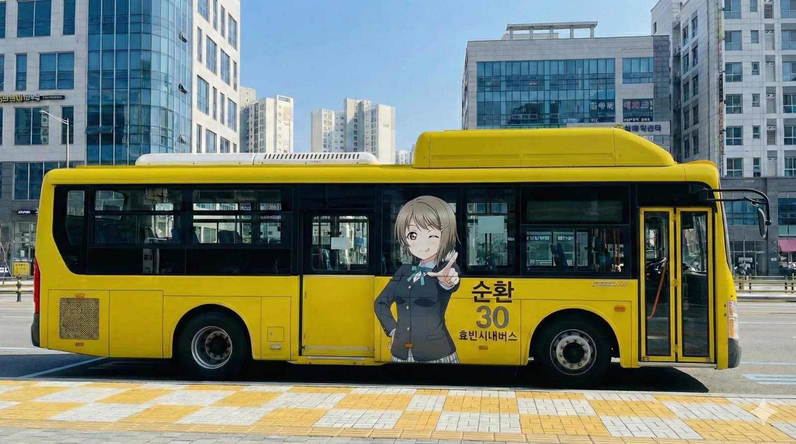
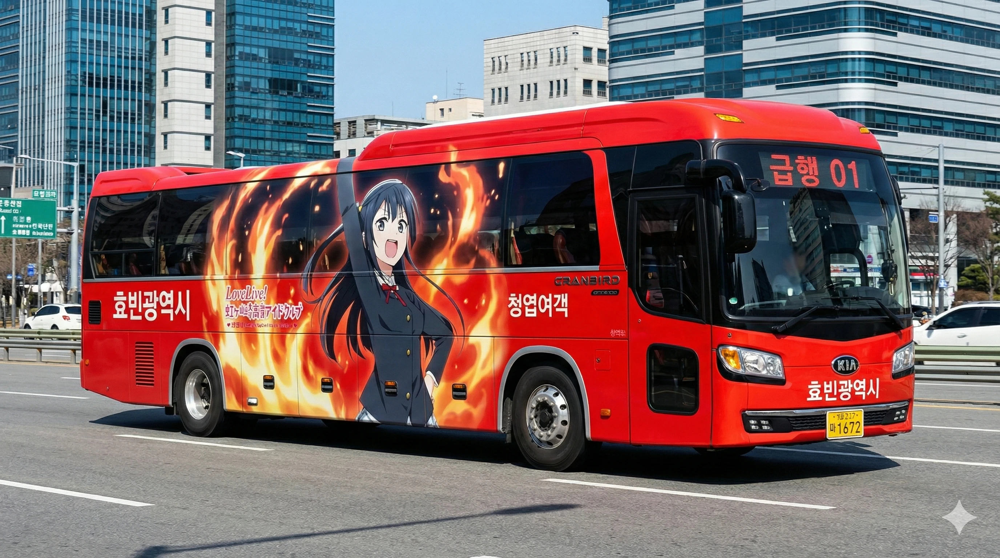
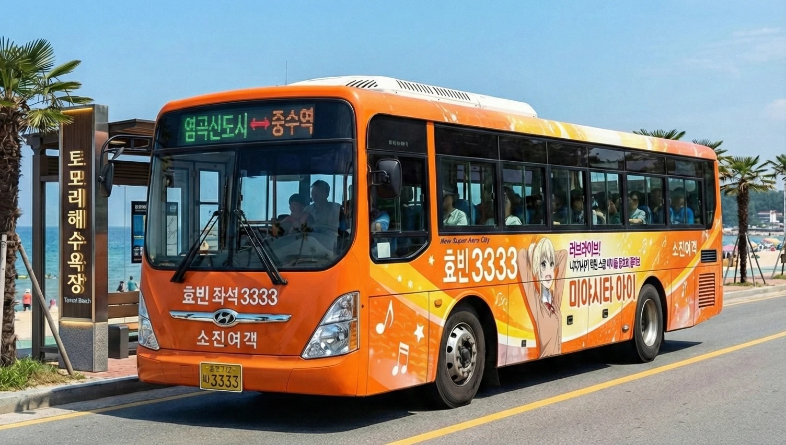
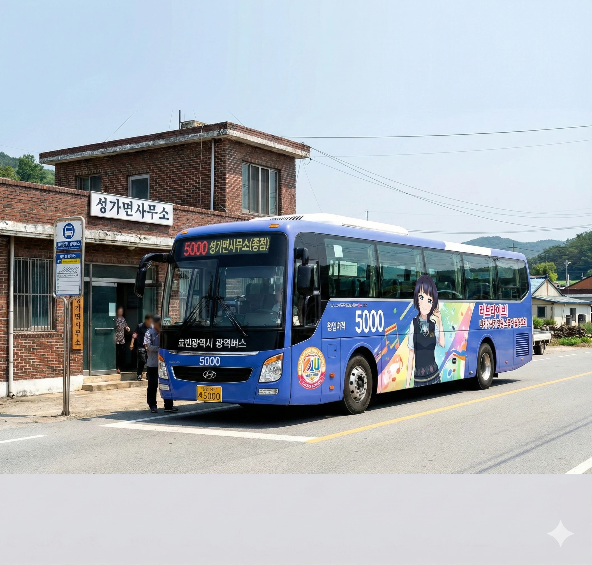
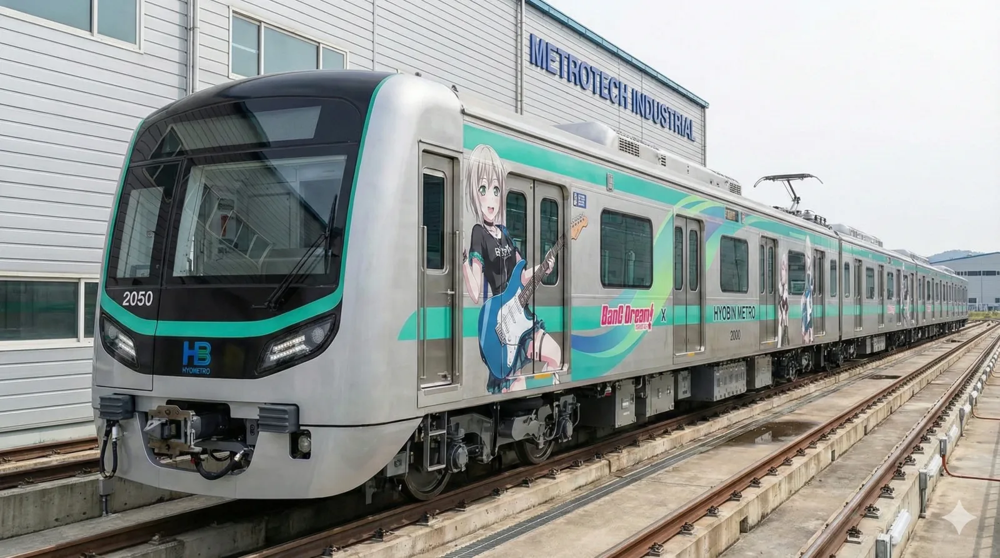

과거 효빈시의 대중교통은 '암흑기'라 불릴 만큼 열악했습니다. 2000년대 초반, 시민들은 낡고 위험한 버스에 몸을 실어야 했고, 불합리한 노선 체계로 고통받았습니다.
2008년, 새로운 시정부는 대대적인 교통 개혁인 '스타더스트 작전(Operation Stardust)'을 선포했습니다. 칙칙했던 갈색 버스를 걷어내고, 도시의 활력을 상징하는 선명한 원색을 도입했습니다.

"갈 때는 12번, 올 때는 21번."
출발지와 목적지의 권역 번호를 직관적으로 뒤집어, 왕복 노선을 쉽게 인지할 수 있도록 설계된 효빈시만의 독특한 번호 체계입니다.
각 노선의 성격과 완벽하게 매칭된 니지가사키 멤버들의 디자인.
단순한 이동 수단을 넘어, 도시의 풍경을 바꾸는 움직이는 예술입니다.
#효빈의_대동맥 #성실함 #청초함
도심의 주요 거점을 연결하는 믿음직한 발. 비 오는 날이면 감성이 폭발한다는 '시즈쿠 데이' 밈의 주인공입니다. 효빈시 어디서나 가장 흔하게 볼 수 있는 대표 차종입니다.

#골목길_돌파 #적법운행 #신뢰
'적법한 운행'이라 쓰고 '칼치기'라 읽는 기동성. 난개발로 엉망인 구도심의 좁은 골목길을 정확하게 뚫고 다닙니다. 시오리코의 진지하고 올곧은 성격을 담았습니다.

#카스민_버스 #귀여움 #하라구로(?)
"가장 귀여운 버스는 바로 나!" 노란색 박스카 형태가 병아리를 닮았습니다. 권역 내부를 뱅글뱅글 도는 노선으로, 귀엽지만 속이 검은(?) 하라구로 매력을 어필합니다.

#열정 #속도 #성우_안내방송
주요 거점만 찍고 날아가는 강렬한 레드. 1번 노선의 경우 실제 세츠나 성우의 안내방송이 송출됩니다. 불타오르는 열정으로 누구보다 빠르게 목적지까지 질주합니다.

#해피_바이러스 #고급형 #에너지
과거 악명 높았던 '두청운수'를 몰아내기 위해 도입된 고급형 노선의 상징입니다. 아이의 넘치는 에너지처럼 활기차게 해안 도로와 도심을 연결합니다.

#어른의_매력 #장거리 #방향치_주의
도시와 도시를 잇는 성숙한 매력. 모델처럼 세련되고 쿨한 디자인이 돋보입니다. 덕빈북도 오지까지 커버하는 장거리 노선의 신뢰성을 상징합니다.

#힐링 #포근함 #느긋한_배차
골목골목을 누비는 포근한 버스. 배차 간격이 매우 느긋하여 타려다가 잠들 수도 있습니다. 험준한 산길도 마다하지 않는 외유내강형 노선입니다.

#치유 #포카포카 #리무진
여행의 설렘과 피로를 감싸주는 힐링 버스. 엠마의 따뜻한 마음씨처럼 편안한 우등 시트와 넉넉한 수하물 공간을 제공합니다.
#오픈탑_2층 #관광명소 #성지순례
효빈시의 주요 관광지와 애니메이션 성지를 순환하는 2층 오픈탑 버스. 멤버 전원이 랩핑된 스페셜 에디션으로, 팬들에게 최고의 경험을 선사합니다.
버스뿐만이 아닙니다. 효빈교통공사(HM)가 운영하는 도시철도 노선색마저
우연히도 BanG Dream! 캐릭터들의 이미지 컬러와 일치해버렸습니다.
이 기적 같은 우연을 놓치지 않고 공식 콜라보레이션으로 승화시켰습니다.

Poppin'Party Gt.
효빈항과 해수욕장을 연결하는 청량한 파란 물결, 1호선. 바다를 사랑하는 타에의 쿨하고 엉뚱한 매력을 담았습니다.

Afterglow Gt.
고송신도시와 도심을 잇는 순환선의 편안함, 2호선. 모카처럼 느긋하게 도시 전체를 감싸며 돕니다.

Poppin'Party Dr.
사가당과 중수지구를 감싸는 따스한 노란색, 3호선. 사아야의 다정함이 승객들을 맞이합니다.

Poppin'Party Gt. & Vo.
이자 신도시를 가로지르는 활기찬 주황색, 4호선. 반짝반짝 두근두근! 카스미의 별 모양 스티커가 포인트.

Afterglow Gt. & Vo.
서구 당선동을 관통하는 강렬한 붉은색, 5호선. 란의 뜨거운 열정(과 브릿지)처럼 도시의 중심을 가로지릅니다.

Roselia Vo.
중수 교육특구를 지나는 고고한 보라색, 6호선. 정상을 향해 달리는 유키나의 카리스마가 느껴집니다.

MyGO!!!!! Gt.
구도심 중구를 활력 있게 잇는 사랑스러운 분홍색, 7호선. 아논의 '인싸력'으로 승객들과 소통합니다.

Pastel*Palettes Key.
남구 평당동 산업단지를 잇는 신비로운 연보라색, 8호선. 부시도! 정신으로 안전 운행을 약속합니다.

Morfonica Vo.
대학가를 연결하는 맑고 투명한 연청색, 빈효선 광역전철. 마시로의 환상적인 세계로 안내합니다.
효빈 버스계의 큰형님
서북부의 맹주
고속버스 명가
해안 노선의 강자
* 각 운수 회사는 해당 캐릭터의 공식 라이선스를 취득하여 랩핑 및 테마 버스를 운영하고 있습니다.